Wohnhaus
Ein Haus, das zu Ihnen passt.
Modern, Landhaus oder Klinker mit Satteldach: Wir planen und bauen in jedem Stil, aus einer Hand. Wählen Sie eine Richtung, und sehen Sie Beispiele aus unseren Projekten.
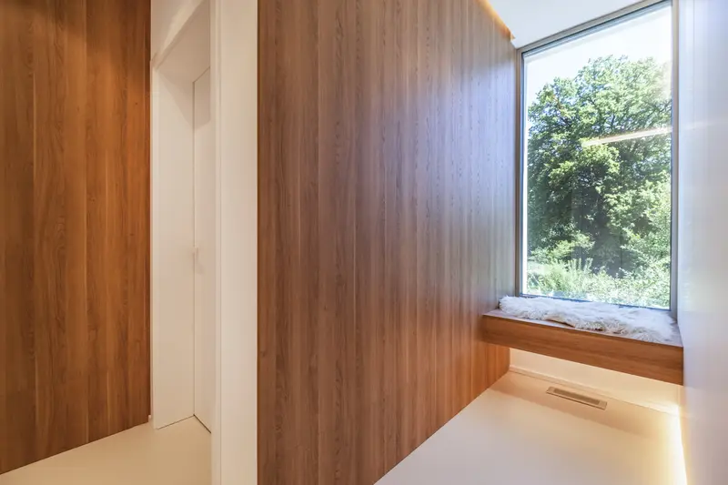
Haus mit Lichtband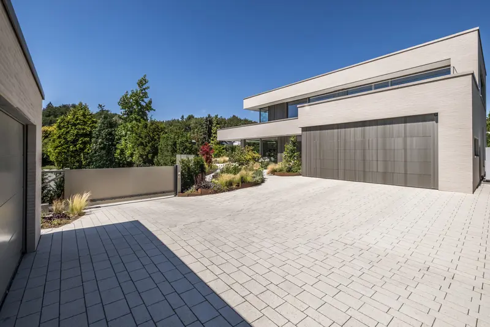
Haus mit Lichtband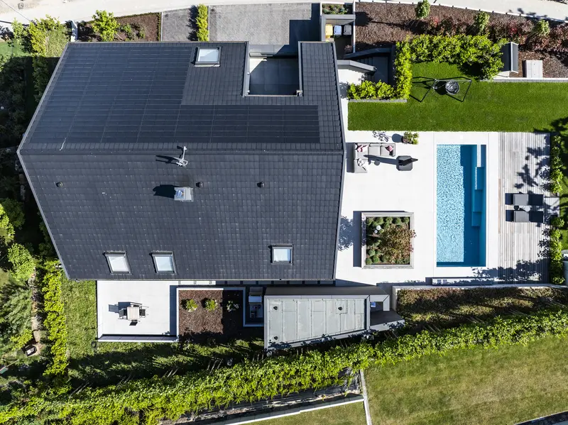
Lamellenhaus im Kreis Steinfurt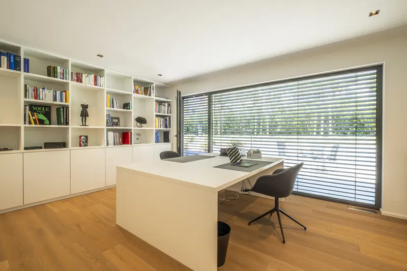
Lamellenhaus im Kreis Steinfurt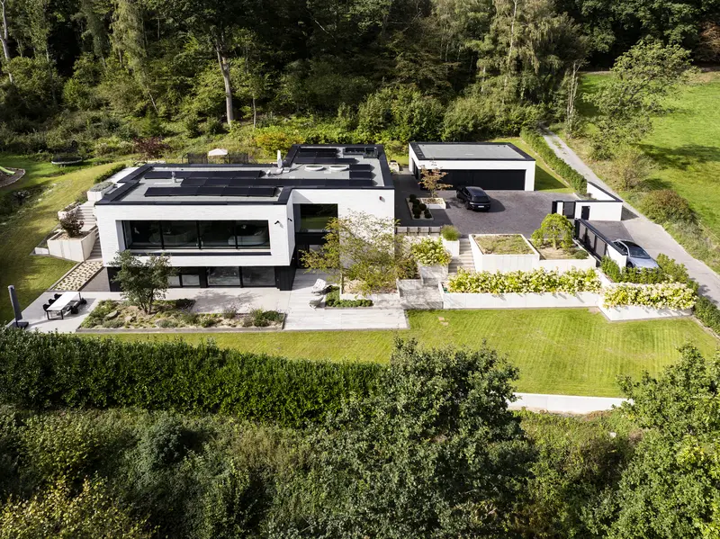
Am Hang im Bergischen Land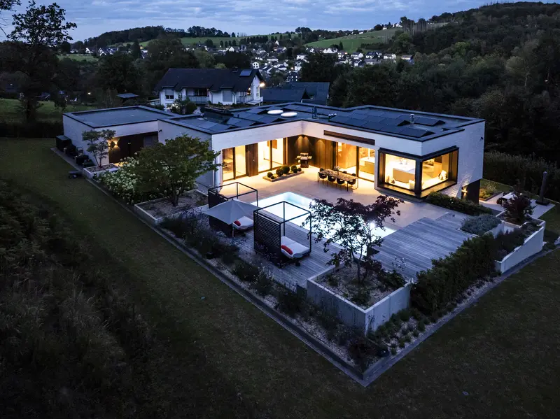
Am Hang im Bergischen Land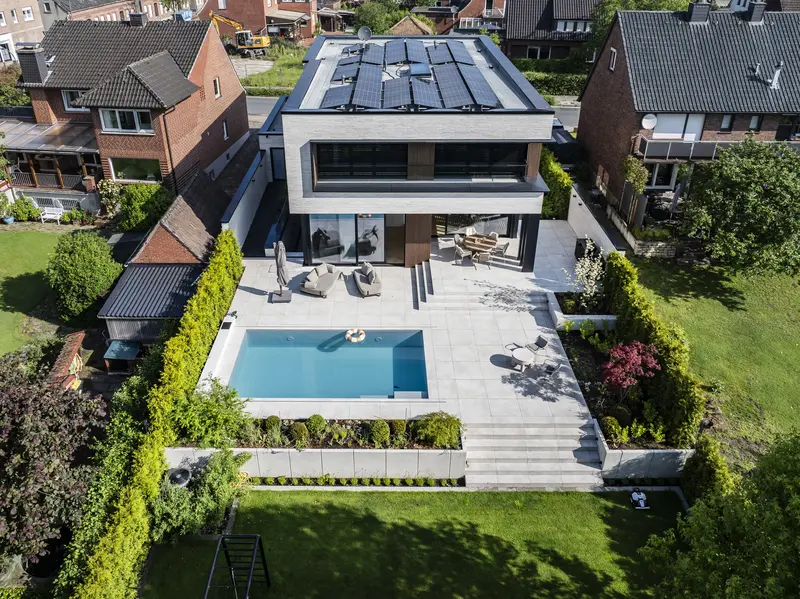
Haus mit Pool in Rheine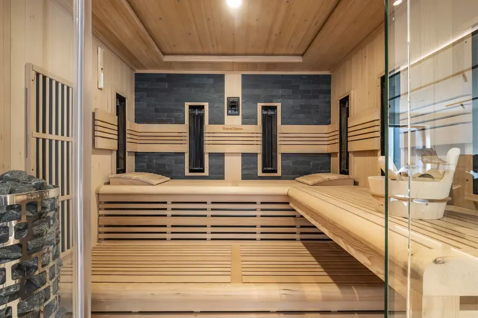
Haus mit Pool in Rheine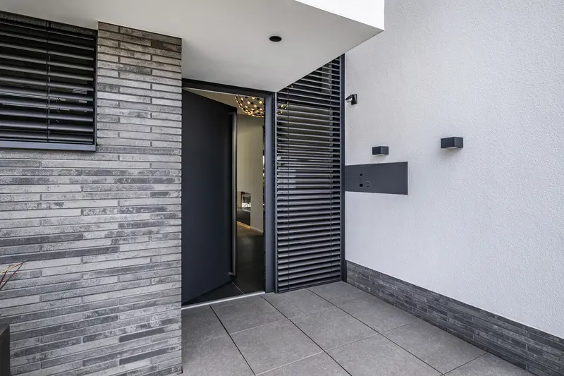
Haus in Steinfurt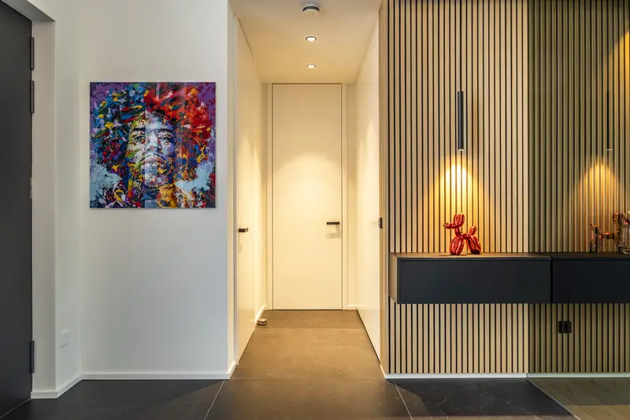
Haus in Steinfurt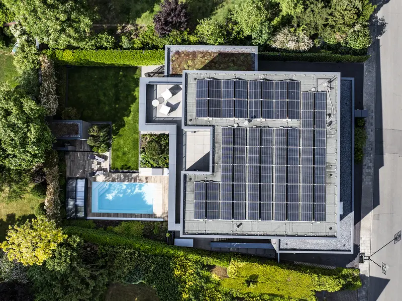
Dunkles Haus in Osnabrück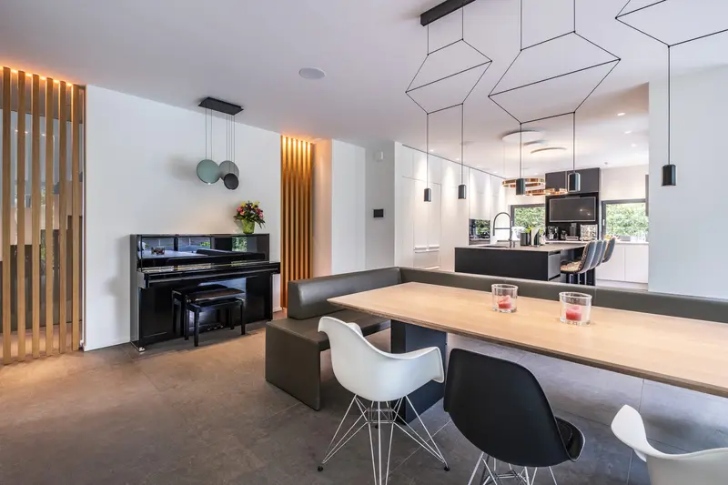
Dunkles Haus in Osnabrück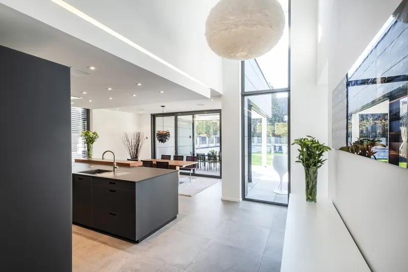
Graues Klinkerhaus in Vreden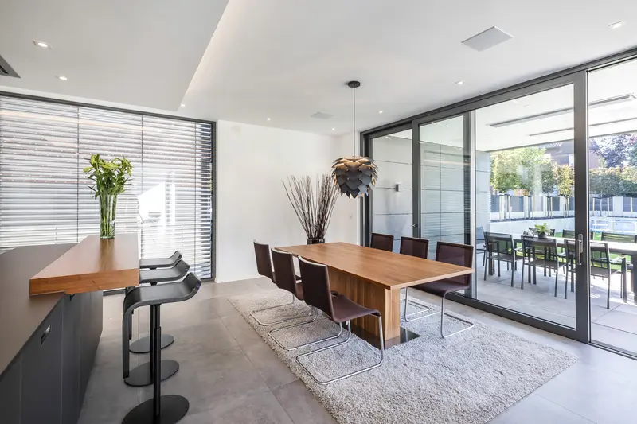
Graues Klinkerhaus in VredenUnd dann
Vom ersten Strich bis zum Einzug.
Entwurf, Planung und Bau kommen bei uns aus einem Haus: eigene Architektinnen, Bauingenieure, Bauleiter, Poliere und Maurer. Alle Schritte auf der Startseite